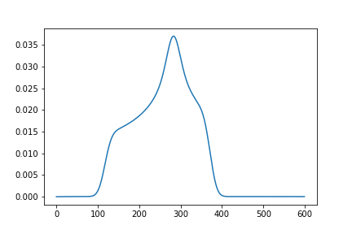
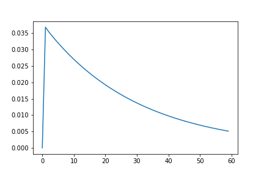

Getting started
Download teacups
You can download teacups via git:
git clone 'https://github.com/TheresiaQuintes/teacups.git'
Installation
Note
Anaconda is used for development and so it is highly recommended. Virtualenv might be possible, but there is no guarantee for full functionality!
Open a Conda-Shell
Setup a new conda environment:
conda create -n teacups
Note
You can also use another environment name or use an existing environment. It is recommended to use a new environment to avoid side effects.
Activate the conda environment:
conda activate teacups
Install necessary packages:
conda install numpy scipy matplotlib tqdm psutil
Add the cloned directory to your pythonpath:
import sys sys.path.append("<your local path>/teacups/src")
Note
You add the path in each skript that you are going to run by adding the
sys.path.appendcommand to the very beginning of the skript.You can add the path e.g. in an IDE like Spyder in which you want to run the code.
Test your installation
Run the following script in an IDE (e.g. Thonny, Spyder…) of your choice:
# Adding the python path (optional)
import sys
sys.path.append("<your local path>/teacups/src")
# Start of the simulation
import teacups.classes as cl
import teacups.simulations as sim
import matplotlib.pyplot as plt
Sys = cl.Sys()
Exp = cl.Exp()
SimOpt = cl.SimOpt()
spec = sim.teacups(Sys, Exp, SimOpt)
plt.figure()
plt.plot(spec[5].real)
plt.figure()
plt.plot(spec[:, 300].real)
On Windows you have to run the following Skript:
# Adding the python path (optional)
import sys
sys.path.append("<your local path>/teacups/src")
# Start of the simulation
import teacups.classes as cl
import teacups.simulations as sim
import matplotlib.pyplot as plt
if __name__ == "__main__":
Sys = cl.Sys()
Exp = cl.Exp()
SimOpt = cl.SimOpt()
spec = sim.teacups(Sys, Exp, SimOpt)
plt.figure()
plt.plot(spec[5].real)
plt.figure()
plt.plot(spec[:, 300].real)
plt.show()
You should receive the following two images:
{kind=link}

{kind=link}

Attention
On Windows you have to enclose your code always into the statement if __name__ == "__main__:" to ensure that the multiprocessing works properly. For the correct syntax see the example above.